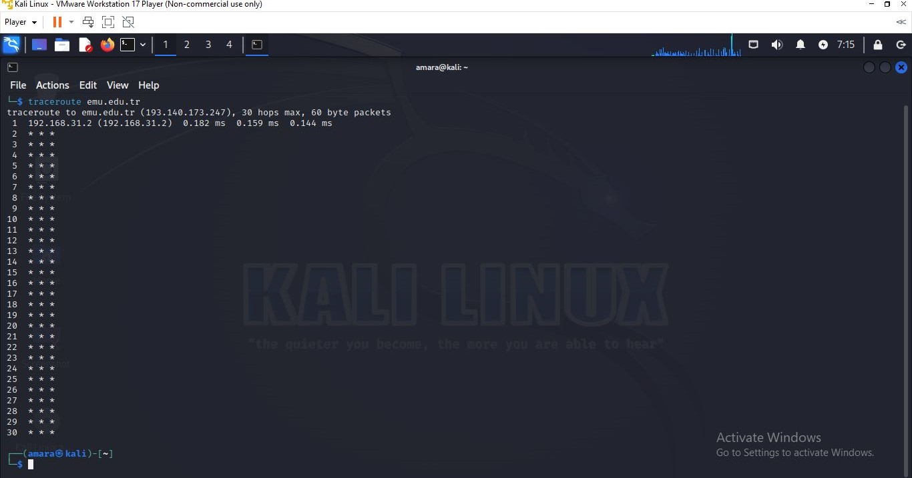
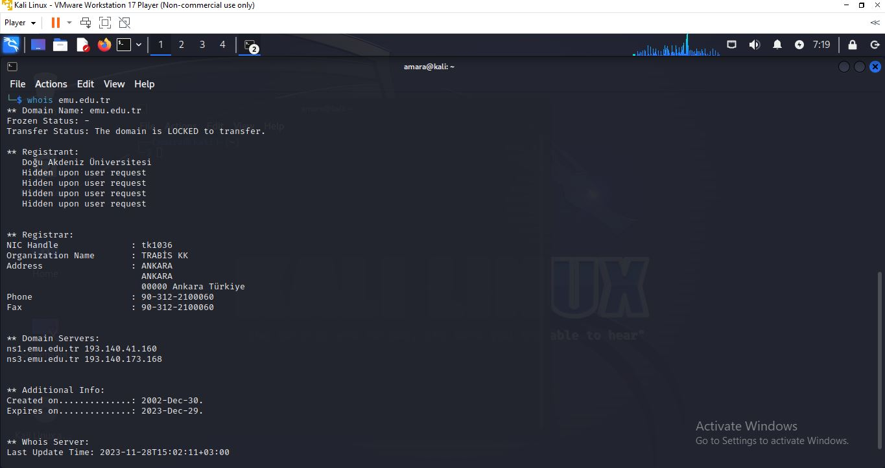
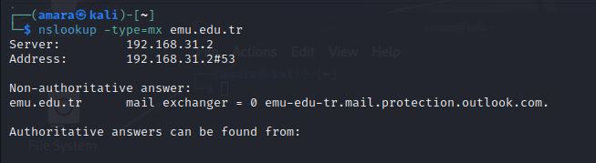
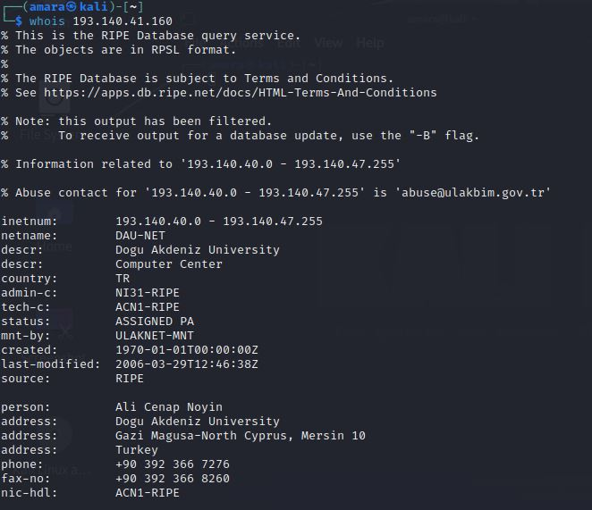
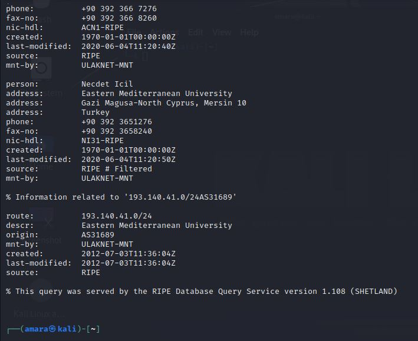

scanning Activity
Using the website assigned in unit 1, I carried out the following exercises and answered the questions listed below:
the questions are listed below:
- How many hops from your machine to your assigned website?
- Which step causes the biggest delay in the route?
- what is the average duration of that delay?
- What are the main nameservers for the website?
- Who is the registered contact?
- What is the MX record for the website?
- Where is the website hosted?
How many hops from your machine to your assigned website?
traceroute
I used traceroute to get the number of hops on the website, “emu.edu.tr”, and got this result.
I made some research to find out why I encountered asterisks instead. This is because asterisks represent situations where the router along the path doesn't respond to the particular type of packet that traceroute sends, or the response is blocked by a firewall.
What does traceroute do?
Traceroute is a network diagnostic tool that helps you trace the route that packets take from your computer to a destination host or website. It's commonly used to identify the path and network delays between the source and destination.
Which step causes the biggest delay in the route? What is the average duration of that delay?
I can't tell which step causes the biggest delay because of the issue I encountered in the previous step (using traceroute)
What are the main nameservers for the website?
nslookup
The main nameservers for the website, “emu.edu.tr”, using , “+short NS emu.edu.tr nslookup”, are as follows:
- ns1.emu.edu.tr
- ns2.emu.edu.tr
nslookup (Name Server Lookup) is a command-line tool used to query DNS (Domain Name System) servers to obtain domain name or IP address information. It is often used in the context of network reconnaissance to gather information about domain names and their associated IP addresses.
Who is the registered contact?
To obtain the registered contact, I used the command, “whois emu.edu.tr”, and I got the result as follows:
What does the whois command do?
The whois command is a command-line utility that allows users to retrieve information about domain registrations and IP address allocations from domain registrars and regional Internet registries. The information provided by whois includes details about the owner of a domain, the domain's registration status, registration and expiration dates, and contact information. For IP addresses, whois can provide information about the organization to which the IP address is allocated.
What is the MX record for the website?
The MX record for the website was gotten using, “nslookup -type=mx google.com”, the results are as follows:
What does the nslookup -type do?
Allows you to specify the type of DNS record you want to query for. DNS (Domain Name System) is a hierarchical system that translates human-readable domain names into IP addresses and vice versa. Different types of DNS records serve various purposes.
Where is the website hosted?
To find the information about where the website is hosted, i used whois and the IP address as follows:

What does the whois (IP address) do?
It performs a reverse DNS lookup to find information about the organization or entity to which the IP address is assigned. The whois database provides information about IP address allocations, including details about the regional Internet registry (RIR) responsible for the address space and the organization to which the IP address is assigned.